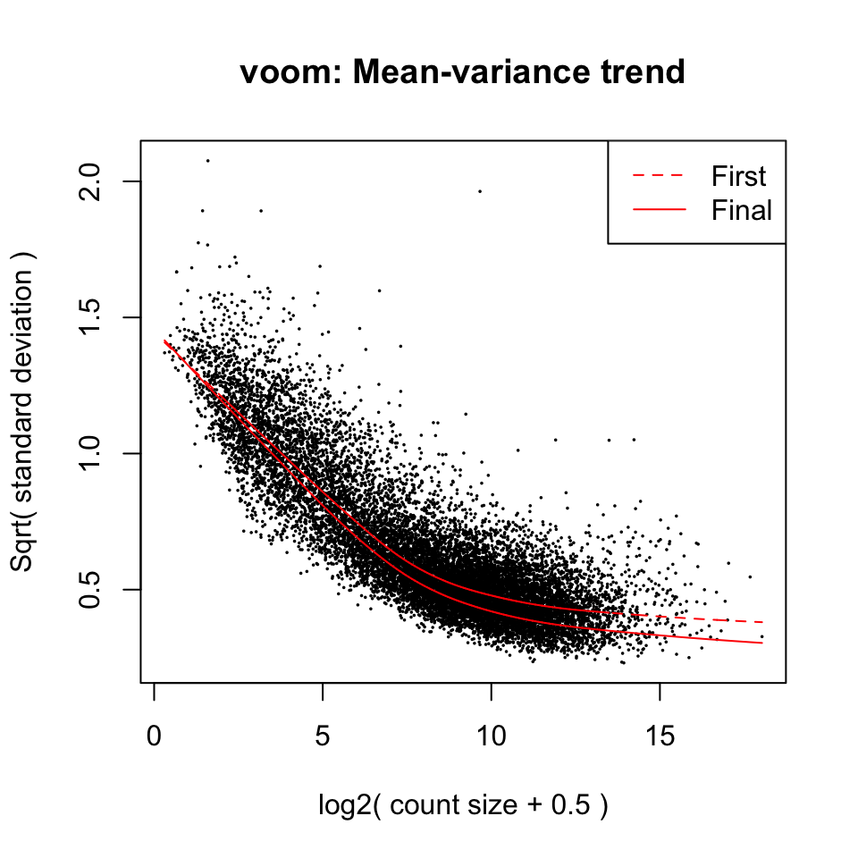
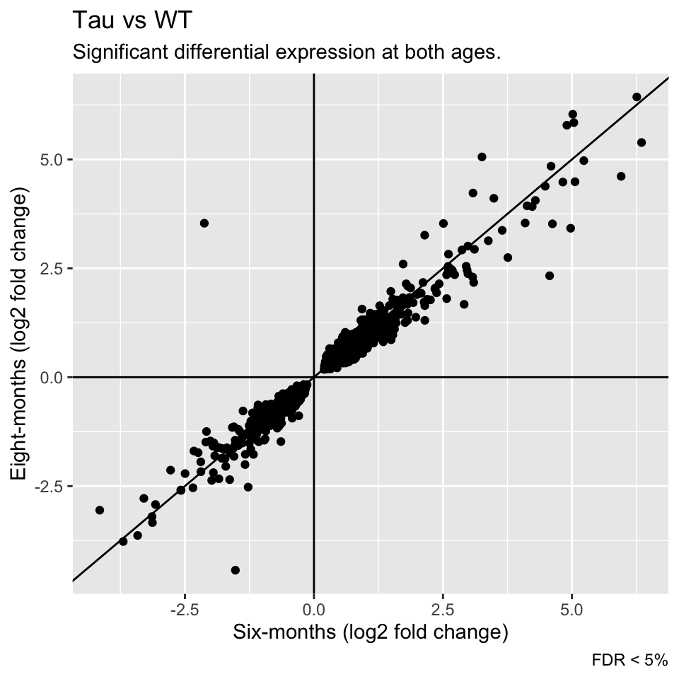
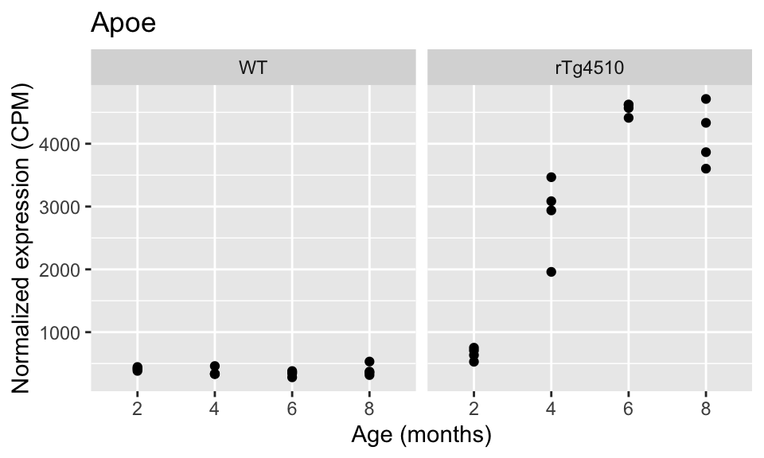
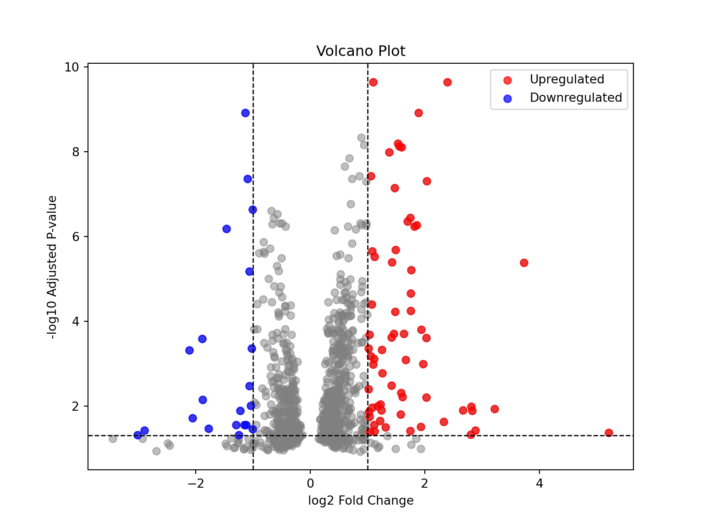

flowchart LR
Samples["Samples<br/>━━━━━<br/>A1,A2,A3<br>B1,B2,B3<br>C1,C2,C3"] --> Counts(RNAseq)
Counts --> NormCounts("Normalized counts")
NormCounts --> Results(Counts, CPMs)
NormCounts --> Comparisons("Comparisons<br/>━━━━━<br/>A vs B<br>B vs C<br>A vs C")
Comparisons --> Stats(Fold change, p-values)
Results --> ducklake[(ducklake 🦆)]
Stats --> ducklake
tl;dr
This week I learned how to store 1) the gene-level results (raw and normalized counts) and 2) the results of multiple comparisons between sample groups (p-values, log2 fold change, etc) in a data lake, specifically a ducklake managed by duckdb. It allows me to store large tables in parquet files on disk (or in the cloud), and to interact with them from R, python or via plain SQL.
Data lakes 💧
A data lake describes a setup where (usually large) datasets are not added as tables to the relational database, but are stored in files instead. These files can be stored on the local system or in the cloud, and are queried as needed. Different file formats are used, including e.g. CSV or parquet.
Keeping track of external files often requires additional infrastructure, e.g. a catalog, and updating / changing data while keeping track of file locations and names can pose challenges. The DuckLake release post provides a great summary and explains the motivation behind the development of the extension.
Managing gene expression data across studies
Over the years, I have been involved in planning, executing and analyzing hundreds of RNA-seq experiments. First, I focus on a single study, performing exploratory and differential expression analyses to answer key scientific questions. Combining measurements (e.g. gene- or exon-level counts), sample and feature metadata in a single object, e.g. a SummarizedExperiment R object or an AnnData python object greatly facilitates these study-level analyses.
But sooner or later, additional questions arise that require the analysis of multiple experiments, e.g. comparing the results of different studies performed using the same model system, employed the same perturbation or were conducted at different time points. Now, I need to wrangle multiple different datasets - each of which might contain multiple different experimental groups that can be compared to each other.
For the longest time, I have stored data from individual studies as serialized R objects, e.g. DGEList or MArrayLM objects with RNA-seq counts and results of statistical comparisons, respectively. For cross-study comparisons I would load each of the required objects into an analysis session, extract the statistics of interest, stack them into a table, etc - writing lots of bespoke code for each analysis.
In many cases, it is of interest to compare the results of differential expression analysis, e.g. the observed fold changes and associated statistics (p-values, FDR, confidence intervals, etc). What if I extracted the relevant statistics as soon I first analysed a new study, and then stored them in a standardized, language-agnostic format? Over time, this collection of results would grow and could facilitate even complex cross-study analyses were needed1.
This flowchart illustrates my workflow for a single study, but it could be repeated for each new RNA-seq experiment I encounter:
suppressPackageStartupMessages({
library(DESeq2)
library(dbplyr)
library(dplyr)
library(duckdb)
library(DT)
library(edgeR)
library(fs)
library(ggplot2)
library(glue)
library(limma)
library(sessioninfo)
library(stringr)
library(tidyr)
})Differential gene expression data: Wang et al, 2018
Let’s get some gene expression data to play with. In 2018, Wang et al published the transcriptome analysis of mouse microglia, isolated either from the rTg4510 mouse model or wildtype animals. Four age groups of mice (2-, 4-, 6-, and 8-months) were analyzed to capture longitudinal gene expression changes that correspond to varying levels of pathology, from minimal tau accumulation to massive neuronal loss.
A DESeqDataset object with raw counts, sample and gene annotations is available in my rnaseq-examples github repository2.
Retrieving the raw RNA-seq counts 🧬
dge <- local({
temp_file <- tempfile(fileext = ".rda")
download.file(url = paste0("https://github.com/tomsing1/rnaseq-examples/raw/",
"refs/heads/main/data/tau.rda"),
destfile = temp_file
)
load(temp_file)
edgeR::normLibSizes(tau, method = "TMM")
})There are 4 animals in each of the 8 experimental groups.
table(dge$samples$group)
rTg4510_2 rTg4510_4 rTg4510_6 rTg4510_8 WT_2 WT_4 WT_6 WT_8
4 4 4 4 4 4 4 4 We can compare the different genotypes (and time points) e.g. using the limma/voom workflow. Because there four different time points (2, 4, 6 and 8 months), we extract four different contrasts, each comparing Tau-expressing with wildtype animals of the same age.
Differential expression analysis with limma / voom 📊
design <- model.matrix(~ 0 + group, data = dge$samples)
colnames(design) <- sub("group", "", colnames(design))
keep <- filterByExpr(dge, design = design)
fit <- voomLmFit(
counts = dge[keep & dge$genes$gene_type == "protein_coding", ],
design = design,
plot = TRUE,
sample.weights = TRUE)
contrasts = makeContrasts(
two_months = "rTg4510_2 - WT_2",
four_months = "rTg4510_4 - WT_4",
six_months = "rTg4510_6 - WT_6",
eight_months = "rTg4510_8 - WT_8",
levels = design
)
fit2 <- contrasts.fit(fit, contrasts = contrasts)
fit2 <- eBayes(fit2)At each time point, we detect a large number of differentially expressed genes (with the default FDR < 5% threshold).
summary(decideTests(fit2)) two_months four_months six_months eight_months
Down 302 1058 1799 1464
NotSig 13444 11155 9539 10705
Up 485 2018 2893 2062
Statistical results 📈
The fit2 MArrayLM object contains statistics for all of the contrasts, and this information can be extracted with the limma::topTable function.
stats <- lapply(colnames(fit2), \(contrast) {
tt <- topTable(fit2, coef = contrast, confint = TRUE, number = Inf)[
, c("symbol", "gene_id", "logFC", "CI.L", "CI.R", "P.Value", "adj.P.Val")]
data.frame(
contrast = contrast,
tt
)
})
stats <- do.call(rbind, stats) |>
dplyr::mutate(study = "Wang_2018", .before = 1)
row.names(stats) <- NULL
head(stats) study contrast symbol gene_id logFC CI.L
1 Wang_2018 two_months Cd34 ENSMUSG00000016494 1.0987050 0.9350470
2 Wang_2018 two_months Spp1 ENSMUSG00000029304 2.3917752 2.0306239
3 Wang_2018 two_months Gpr165 ENSMUSG00000031210 -1.1391089 -1.3268933
4 Wang_2018 two_months Cd83 ENSMUSG00000015396 1.8877507 1.5747051
5 Wang_2018 two_months Ccl6 ENSMUSG00000018927 0.8889251 0.7317978
6 Wang_2018 two_months Ctse ENSMUSG00000004552 1.5265838 1.2510690
CI.R P.Value adj.P.Val
1 1.2623629 2.210507e-14 2.232372e-10
2 2.7529265 3.137336e-14 2.232372e-10
3 -0.9513245 2.905853e-13 1.198598e-09
4 2.2007963 3.368978e-13 1.198598e-09
5 1.0460524 1.632581e-12 4.646653e-09
6 1.8020987 2.710774e-12 6.429505e-09We might also be interested in the raw counts and normalized expression scores (Counts per million reads) for each gene in each of the samples.
exprs <- local({
counts <- dge$counts |>
as.data.frame() |>
dplyr::bind_cols(dge$genes) |>
tidyr::pivot_longer(cols = starts_with("DRN-"), names_to = "sample_id",
values_to = "counts") |>
dplyr::pull("counts")
edgeR::cpm(dge, normalized.lib.sizes = TRUE) |>
as.data.frame() |>
dplyr::bind_cols(dge$genes) |>
tidyr::pivot_longer(cols = starts_with("DRN-"), names_to = "sample_id",
values_to = "cpm") |>
dplyr::mutate(counts = counts) |>
dplyr::left_join(
data.frame(sample_id = colnames(dge),
group = as.character(dge$samples$group)
),
by = "sample_id"
)
}) |>
dplyr::mutate(study = "Wang_2018", .before = 1)
head(exprs)# A tibble: 6 × 8
study gene_id symbol gene_type sample_id cpm counts group
<chr> <chr> <chr> <chr> <chr> <dbl> <int> <chr>
1 Wang_2018 ENSMUSG00000000001 Gnai3 protein_codi… DRN-10415 86.1 2754 WT_6
2 Wang_2018 ENSMUSG00000000001 Gnai3 protein_codi… DRN-10418 84.6 2764 WT_8
3 Wang_2018 ENSMUSG00000000001 Gnai3 protein_codi… DRN-10421 95.9 2907 WT_8
4 Wang_2018 ENSMUSG00000000001 Gnai3 protein_codi… DRN-10424 61.5 1685 WT_8
5 Wang_2018 ENSMUSG00000000001 Gnai3 protein_codi… DRN-10427 85.0 2768 WT_6
6 Wang_2018 ENSMUSG00000000001 Gnai3 protein_codi… DRN-10430 86.7 2477 WT_6 We now have two large tables:
exprs: 1721632 rows and 8 columns with raw and normalized counts for each of the 32 samples.stats: 56924 rows and 9 columns with the results of the differential expression analysis, across 4 contrasts.
To make these tables easier to access from other tools (not just within R), let’s create our first ducklake!
Instantiating a DuckLake 🦆
In May 2025, the duckdb team released the DuckLake core extension to manage a data lake.
A DuckLake takes advantage of a catalog database, and we can choose among many different options as outlined here. For this example, I will use duckdb as the database engine, because there will only be a single client (e.g. my R session) that will interact with it.
All interactions with my DuckLake will be conducted using SQL, e.g. it is not tied to R (or python, etc). Here, I am leveraging the duckdb R package to connect to duckdb from within R, but the same functionality would be available e.g. by interacting with duckdb via the command line.
We need version 1.3.1 of duckdb or above:
package.version("duckdb")[1] "1.3.1"First, we define two paths:
1db_file <- file.path(tempdir(), "metadata.ducklake")
2work_dir <- file.path(tempdir(), "lake_data_files")- 1
-
The location of the metadata database. Here, we are using a
duckdbinstance, but we could also use another relational database (e.g. Postgres). - 2
- The path to a folder that will contain the data in the form of parquet files.
- 1
-
We instantiate a
duckdbinstance in memory and connect to it, to manage the connection to the metadata database (which also happens to be aduckdbinstance, but a different one!) - 2
-
The path to the data lake’s metadata database is prefixed with
ducklake:.
The following SQL code first installs the ducklake extension3, which is then used automatically when a DuckLake is attached by
- Specifying the metadata dataase (by pointing to the
db_pathlocation) and - The location where data is stored in parquet files.
Afterwards, we can work with the my_ducklake data lake in the same way we interact with any other database, e.g. we can create tables (exprs and stats) and copy the gene expression measurements and differential expression statistics into them.
INSTALL ducklake;
ATTACH ?db_path AS my_ducklake (DATA_PATH ?work_dir);
USE my_ducklake;Let’s start by copying the results of two of the comparisons into the stats table:
1dbWriteTable(
conn = con,
name = "stats",
value = dplyr::filter(stats, contrast %in% c("two_months", "four_months"))
)
2dbWriteTable(con, "exprs", exprs)- 1
-
The
dbWriteTablefunction creates a table and inserts the content of a data.frame. First, we add only the results for two contrasts (by filtering thestatsdata.frame.) - 2
-
The second call to
dbWriteTableinserts the fullexprstable with the raw and normalized expression scores for each gene in each sample.
We can confirm that statistics for ~ 14,000 genes are now available:
SELECT contrast, COUNT(symbol) FROM my_ducklake.stats GROUP BY contrast;| contrast | count(symbol) |
|---|---|
| two_months | 14231 |
| four_months | 14231 |
For example, we can retrieve the differential expression results for a single gene, Cd34:
tbl(con, "stats") |>
dplyr::filter(symbol == "Cd34")# Source: SQL [?? x 9]
# Database: DuckDB v1.3.1 [root@Darwin 24.5.0:R 4.5.0/:memory:]
study contrast symbol gene_id logFC CI.L CI.R P.Value adj.P.Val
<chr> <chr> <chr> <chr> <dbl> <dbl> <dbl> <dbl> <dbl>
1 Wang_2018 two_months Cd34 ENSMUSG0000… 1.10 0.935 1.26 2.21e-14 2.23e-10
2 Wang_2018 four_months Cd34 ENSMUSG0000… 1.99 1.81 2.18 6.75e-20 7.51e-17Behind the scenes, duckdb has stored our data in two parquet files, one for each table:
FROM ducklake_table_info('my_ducklake')| table_name | schema_id | table_id | table_uuid | file_count | file_size_bytes | delete_file_count | delete_file_size_bytes |
|---|---|---|---|---|---|---|---|
| exprs | 0 | 2 | 0197f767-37cc-726e-a52d-456abb2fd3bb | 1 | 8933558 | 0 | 0 |
| stats | 0 | 1 | 0197f767-37a3-79a3-968d-2dce4db29927 | 1 | 1486962 | 0 | 0 |
The files themselves are stored in the work_dir directory we specified when we instantiated the ducklake. (Here, I am using a folder on the local system, but I could have provided a cloud location on AWS S3 or within a Google Cloud bucket instead.) The parquet file for the stats table is in the eponymous sub-directory:
fs::dir_info(file.path(work_dir, "main", "stats")) |>
dplyr::mutate(filename = basename(path)) |>
dplyr::select(filename, size)# A tibble: 1 × 2
filename size
<chr> <fs::bytes>
1 ducklake-0197f767-37a4-7857-ac23-d99288d203b6.parquet 1.42MNext, wee append the differential expression statistics for the remaining two comparisons to the same stats table in our ducklake:
dbAppendTable(
conn = con,
name = "stats",
value = dplyr::filter(stats, contrast %in% c("six_months", "eight_months"))
)Inspecting the stats directory now reveals that a second parquet has been created:
fs::dir_info(file.path(work_dir, "main", "stats")) |>
dplyr::mutate(filename = basename(path)) |>
dplyr::select(filename, size)# A tibble: 2 × 2
filename size
<chr> <fs::bytes>
1 ducklake-0197f767-37a4-7857-ac23-d99288d203b6.parquet 1.42M
2 ducklake-0197f767-38b4-7f4a-9733-14533faadfb8.parquet 1.44Mand we now query results for all four comparisons:
SELECT contrast, COUNT(symbol) FROM my_ducklake.stats GROUP BY contrast;| contrast | count(symbol) |
|---|---|
| eight_months | 14231 |
| two_months | 14231 |
| four_months | 14231 |
| six_months | 14231 |
Time travel 🧭
Data can change over time. For example, what if we decided to include an additional covariate in our linear models? We would obtain an updated set of differential expression statistics, and could replace the old results in our ducklake. But what if a previous analysis used the old results? How could we track the changes that were made over time - or even choose whether we want to use the old or the new results for a report?
Actually, ducklake tracks all modifications that are made, including schema changes or insertions / deletions or update of data. Every modification triggers the creation of a new snapshot:
SELECT * FROM ducklake_snapshots('my_ducklake');| snapshot_id | snapshot_time | schema_version | changes |
|---|---|---|---|
| 0 | 2025-07-11 02:53:46 | 0 | schemas_…. |
| 1 | 2025-07-11 02:53:46 | 1 | c(“table…. |
| 2 | 2025-07-11 02:53:46 | 2 | c(“table…. |
| 3 | 2025-07-11 02:53:46 | 2 | tables_i…. |
We can use the AT keyword to query the ducklake at any point in time. For example, we can query the latest snapshot of the database, e.g. the third snapshot:
SELECT contrast, COUNT(symbol)
FROM my_ducklake.stats AT (VERSION => 3)
GROUP BY contrast;| contrast | count(symbol) |
|---|---|
| two_months | 14231 |
| eight_months | 14231 |
| six_months | 14231 |
| four_months | 14231 |
But we can also issue the same query to inspect the number of data points that were available after the second snapshot was taken:
SELECT contrast, COUNT(symbol)
FROM my_ducklake.stats AT (VERSION => 2)
GROUP BY contrast;| contrast | count(symbol) |
|---|---|
| two_months | 14231 |
| four_months | 14231 |
Alternatively, we can also provide a timestamp or the time interval of interest, please check the ducklate documentation for more examples.
The ducklake extension also provides helper functions, e.g. a call to the ducklake_table_changes function can highlight changes that occured between snapshots 1 and 2:
SELECT snapshot_id, change_type, COUNT(*)
FROM ducklake_table_changes('my_ducklake', 'main', 'stats', 1, 2)
GROUP BY snapshot_id, change_type;| snapshot_id | change_type | count_star() |
|---|---|---|
| 1 | insert | 28462 |
Or between snapshots 2 and 3:
SELECT snapshot_id, change_type, COUNT(*)
FROM ducklake_table_changes('my_ducklake', 'main', 'stats', 2, 3)
GROUP BY snapshot_id, change_type;| snapshot_id | change_type | count_star() |
|---|---|---|
| 3 | insert | 28462 |
Or we can count the number of insertions performed to create snapshot 1:
SELECT snapshot_id, COUNT(*)
FROM ducklake_table_insertions('my_ducklake', 'main', 'stats', 1, 1)
GROUP BY snapshot_id;| snapshot_id | count_star() |
|---|---|
| 1 | 28462 |
Exploring gene expression results using SQL
Tau-dependent gene expression changes across time
Now that we have the results for multiple comparisons (aka contrasts) in place, we can e.g. look for genes that are significantly up- or down-regulated (FDR < 5%) between Tau-transgenic and wildtype animals at both 6 and 8 months of age.
To keep things readable, we create two Common Table Expressions (CTEs), each extracting the results of one contrast (e.g. either six_months or four_months). Then we join the results and limit the output to 1000 random genes that pass the FDR threshold. (We order the results by the hash of the gene symbol to obtain a pseudo-random ordering.)
WITH six AS (
SELECT symbol, logFC, "P.Value", "adj.P.Val"
FROM stats
WHERE study = 'Wang_2018' AND contrast = 'six_months' AND "adj.P.Val" < 0.05
),
eight AS (
SELECT symbol, logFC, "P.Value", "adj.P.Val"
FROM stats
WHERE study = 'Wang_2018' AND contrast = 'eight_months' AND "adj.P.Val" < 0.05
)
SELECT s.symbol,
s.logFC six_logFC, s."P.Value" six_p,
e.logFC eight_logFC, e."P.Value" eight_p
FROM six s
JOIN eight e ON s.symbol = e.symbol
ORDER BY hash(s.symbol, 1234)
LIMIT 1000;We see that almost all genes that pass the FDR threshold at both time points are differentially regulated in the same direction at both time points (e.g. they fall into the top right or bottom left quadrants). Their log fold changes are highly correlated between the two ages as well (e.g. most of the points fall close to the diagonal).
df |>
ggplot() +
aes(x = six_logFC, y = eight_logFC) +
geom_point() +
geom_abline(slope = 1, intercept = 0) +
geom_hline(yintercept = 0) +
geom_vline(xintercept = 0) +
labs(x = "Six-months (log2 fold change)",
y = "Eight-months (log2 fold change)",
title = "Tau vs WT",
subtitle = "Significant differential expression at both ages.",
caption = "FDR < 5%"
)
Examining the expression of individual genes using dplyr
We can also plot the normalized expression of a specific gene across all samples collected in this study by querying the exprs table. For example, let’s examine the expression of the Apoe gene.
Instead of writing the SQL query ourselves, we can use dplyr to do the job for us.
df <- tbl(con, "exprs") |>
dplyr::filter(study == "Wang_2018", symbol == "Apoe") |>
dplyr::select("symbol", "cpm", "counts", "group")
1dplyr::explain(df)- 1
-
The
explain()function shows us the query and the plan that will be executed byduckdb
<SQL>
SELECT symbol, cpm, counts, "group"
FROM exprs
WHERE (study = 'Wang_2018') AND (symbol = 'Apoe')
<PLAN>
physical_plan
┌───────────────────────────┐
│ DUCKLAKE_SCAN │
│ ──────────────────── │
│ Table: exprs │
│ │
│ Projections: │
│ symbol │
│ cpm │
│ counts │
│ group │
│ │
│ Filters: │
│ study='Wang_2018' │
│ symbol='Apoe' │
│ │
│ ~344326 Rows │
└───────────────────────────┘2df <- dplyr::collect(df)
df |>
DT::datatable(rownames = FALSE) |>
DT::formatSignif(columns = "cpm", digits = 3)- 2
-
Calling
collect()triggers the actuall database scan and returns the results in atibble.
A scatter plot reveals that Apoe gene expression is stongly increased in the Tau transgenic animals:
data.frame(
stringr::str_split_fixed(df$group, pattern = "_", 2)
) |>
setNames(c("genotype", "age")) |>
dplyr::mutate(genotype = factor(genotype, levels = c("WT", "rTg4510"))) |>
dplyr::bind_cols(df) |>
ggplot() +
aes(x = age, y = cpm) +
facet_wrap(~ genotype) +
geom_point() +
labs(x = "Age (months)",
y = "Normalized expression (CPM)",
title = "Apoe"
)
Right now, we only have data from a single study (albeit with four different comparisons) in our ducklake. As we keep adding additional datasets and contrasts, new parquet files will be added and our ability to compare and contrast across studies will grow!
Disconnecting our R session from the data lake
To disconnect, we first switch back to an in-memory duckdb connection, and then detach from the data lake.
dbExecute(conn = con, "USE memory; DETACH my_ducklake;")
dbDisconnect(con)Exploring gene expression results using python 🐍
Even though created and populated the my_ducklake database using the R API, it is not tied to any specific language. That makes this setup a great tool for teams that use multiple languages.
Connecting to our ducklake
For example, we can access the datalake from python using duckdb’s python API instead:
import duckdb
1con = duckdb.connect(database = ":memory:")
2con.sql("INSTALL ducklake")
3con.sql(
f"""
ATTACH 'ducklake:{r.db_file}' AS my_ducklake (READ_ONLY);
""")
df = con.sql(
"""
USE my_ducklake;
SELECT * FROM stats LIMIT 1000;
"""
4).to_df()- 1
-
First, we create an in-memory
duckdbinstance to communicate with the metadata database. - 2
-
Next, we install the
ducklakecore extension, as we did in R above. - 3
-
We attach our metadata database - in this example in read-only mode. Here, we retrieve the path to the metadata database from the
db_fileR variable we defined up (see above)4. But we could just as well hard-code them or provide them in other ways. - 4
-
Calling the
.to_df()method at the end of the command returns the results as a pandas DataFrame, ready for downstream data wrangling or visualization.
Now that we have established the connection, we can run SQL queries from python, e.g. retrieving 1000 rows from the (parquet-file backed) stats table 5.
df.head() study contrast symbol ... CI.R P.Value adj.P.Val
0 Wang_2018 two_months Cd34 ... 1.262363 2.210507e-14 2.232372e-10
1 Wang_2018 two_months Spp1 ... 2.752926 3.137336e-14 2.232372e-10
2 Wang_2018 two_months Gpr165 ... -0.951324 2.905853e-13 1.198598e-09
3 Wang_2018 two_months Cd83 ... 2.200796 3.368978e-13 1.198598e-09
4 Wang_2018 two_months Ccl6 ... 1.046052 1.632581e-12 4.646653e-09
[5 rows x 9 columns]Differential expression visualized in a volcano plot
For example, we can create a volcano plot with the matplotlib python module.
import numpy as np
import matplotlib.pyplot as plt
df['neg_log10_pval'] = -np.log10(df['adj.P.Val'])
pval_thresh = 0.05
logfc_thresh = 1
plt.figure(figsize=(8,6))
plt.scatter(df['logFC'], df['neg_log10_pval'], color='grey', alpha=0.5)
sig_up = df[(df['logFC'] > logfc_thresh) & (df['adj.P.Val'] < pval_thresh)]
plt.scatter(sig_up['logFC'], sig_up['neg_log10_pval'], color='red', alpha=0.7,
label='Upregulated')
sig_down = df[(df['logFC'] < -logfc_thresh) & (df['adj.P.Val'] < pval_thresh)]
plt.scatter(sig_down['logFC'], sig_down['neg_log10_pval'], color='blue',
alpha=0.7, label='Downregulated')
plt.axhline(-np.log10(pval_thresh), color='black', linestyle='dashed',
linewidth=1)
plt.axvline(logfc_thresh, color='black', linestyle='dashed', linewidth=1)
plt.axvline(-logfc_thresh, color='black', linestyle='dashed', linewidth=1)
plt.xlabel('log2 Fold Change')
plt.ylabel('-log10 Adjusted P-value')
plt.title('Volcano Plot')
plt.legend()
plt.show()
Disconnecting our python session from the ducklake
As usual, we disconnect from the ducklake at the end of our analysis session.
con.close()Conclusions
In the past, I had considered storing gene expression data in parquet files, and to manage their location, updates and versions myself. The ducklake extension takes these tasks off my hand, and I am looking forward to exploring its capabilities further.
I am already using a relational database to manage study, sample and gene metadata, e.g. a study’s title, GEO accession, abstract, etc or the properties of each of the samples that constitute an experiment. I envision tracking additional information about comparisons in the same way (e.g. the specification of the linear model, or a human-readable description of the contrast).
The ability to join this metadata with the measurements (counts, CPMs) and the statistical results (log fold changes, p-values, etc) could make duckdb my one-stop shop for data visualization and tertiary analysis. ducklake could also become the foundation for dashboards and other visualization tools, allowing non-computational colleagues to explore a gene expression compendium on their own.
I am a big fan of the well-designed classes offered by Bioconductor, and I take advantage of great R packages every day. But I also appreciate the opportunity to move results into a language-agnostic system, which can then fuel new analyses across a multilingual data science organization.
Reproducibility
Session Information ℹ️
sessioninfo::session_info()─ Session info ───────────────────────────────────────────────────────────────
setting value
version R version 4.5.0 (2025-04-11)
os macOS Sequoia 15.5
system aarch64, darwin20
ui X11
language (EN)
collate en_US.UTF-8
ctype en_US.UTF-8
tz America/Los_Angeles
date 2025-07-09
pandoc 3.4 @ /Applications/RStudio.app/Contents/Resources/app/quarto/bin/tools/aarch64/ (via rmarkdown)
quarto 1.7.32 @ /usr/local/bin/quarto
─ Packages ───────────────────────────────────────────────────────────────────
! package * version date (UTC) lib source
P abind 1.4-8 2024-09-12 [?] CRAN (R 4.5.0)
P Biobase * 2.68.0 2025-04-15 [?] Bioconduc~
P BiocGenerics * 0.54.0 2025-04-15 [?] Bioconduc~
P BiocManager 1.30.26 2025-06-05 [?] CRAN (R 4.5.0)
P BiocParallel 1.42.1 2025-05-29 [?] Bioconduc~
P blob 1.2.4 2023-03-17 [?] CRAN (R 4.5.0)
P bslib 0.9.0 2025-01-30 [?] CRAN (R 4.5.0)
P cachem 1.1.0 2024-05-16 [?] CRAN (R 4.5.0)
P cli 3.6.5 2025-04-23 [?] CRAN (R 4.5.0)
P codetools 0.2-20 2024-03-31 [?] CRAN (R 4.5.0)
P crayon 1.5.3 2024-06-20 [?] CRAN (R 4.5.0)
P crosstalk 1.2.1 2023-11-23 [?] CRAN (R 4.5.0)
P DBI * 1.2.3 2024-06-02 [?] CRAN (R 4.5.0)
P dbplyr * 2.5.0 2024-03-19 [?] CRAN (R 4.5.0)
P DelayedArray 0.34.1 2025-04-17 [?] Bioconduc~
P DESeq2 * 1.48.1 2025-05-08 [?] Bioconduc~
P digest 0.6.37 2024-08-19 [?] CRAN (R 4.5.0)
P dplyr * 1.1.4 2023-11-17 [?] CRAN (R 4.5.0)
P DT * 0.33 2024-04-04 [?] CRAN (R 4.5.0)
P duckdb * 1.3.1 2025-06-23 [?] CRAN (R 4.5.0)
P edgeR * 4.6.2 2025-05-05 [?] Bioconduc~
P evaluate 1.0.4 2025-06-18 [?] CRAN (R 4.5.0)
P farver 2.1.2 2024-05-13 [?] CRAN (R 4.5.0)
P fastmap 1.2.0 2024-05-15 [?] CRAN (R 4.5.0)
P fs * 1.6.6 2025-04-12 [?] CRAN (R 4.5.0)
P generics * 0.1.4 2025-05-09 [?] CRAN (R 4.5.0)
P GenomeInfoDb * 1.44.0 2025-04-15 [?] Bioconduc~
P GenomeInfoDbData 1.2.14 2025-07-08 [?] Bioconductor
P GenomicRanges * 1.60.0 2025-04-15 [?] Bioconduc~
P ggplot2 * 3.5.2 2025-04-09 [?] CRAN (R 4.5.0)
P glue * 1.8.0 2024-09-30 [?] CRAN (R 4.5.0)
P gtable 0.3.6 2024-10-25 [?] CRAN (R 4.5.0)
P htmltools 0.5.8.1 2024-04-04 [?] CRAN (R 4.5.0)
P htmlwidgets 1.6.4 2023-12-06 [?] CRAN (R 4.5.0)
P httr 1.4.7 2023-08-15 [?] CRAN (R 4.5.0)
P IRanges * 2.42.0 2025-04-15 [?] Bioconduc~
P jquerylib 0.1.4 2021-04-26 [?] CRAN (R 4.5.0)
P jsonlite 2.0.0 2025-03-27 [?] CRAN (R 4.5.0)
P knitr 1.50 2025-03-16 [?] CRAN (R 4.5.0)
P labeling 0.4.3 2023-08-29 [?] CRAN (R 4.5.0)
P lattice 0.22-6 2024-03-20 [?] CRAN (R 4.5.0)
P lifecycle 1.0.4 2023-11-07 [?] CRAN (R 4.5.0)
P limma * 3.64.1 2025-05-22 [?] Bioconduc~
P locfit 1.5-9.12 2025-03-05 [?] CRAN (R 4.5.0)
P magrittr 2.0.3 2022-03-30 [?] CRAN (R 4.5.0)
P Matrix 1.7-3 2025-03-11 [?] CRAN (R 4.5.0)
P MatrixGenerics * 1.20.0 2025-04-15 [?] Bioconduc~
P matrixStats * 1.5.0 2025-01-07 [?] CRAN (R 4.5.0)
P pillar 1.11.0 2025-07-04 [?] CRAN (R 4.5.0)
P pkgconfig 2.0.3 2019-09-22 [?] CRAN (R 4.5.0)
P png 0.1-8 2022-11-29 [?] CRAN (R 4.5.0)
P purrr 1.0.4 2025-02-05 [?] CRAN (R 4.5.0)
P R6 2.6.1 2025-02-15 [?] CRAN (R 4.5.0)
P RColorBrewer 1.1-3 2022-04-03 [?] CRAN (R 4.5.0)
P Rcpp 1.1.0 2025-07-02 [?] CRAN (R 4.5.0)
renv 1.1.4 2025-03-20 [1] CRAN (R 4.5.0)
P reticulate 1.42.0 2025-03-25 [?] CRAN (R 4.5.0)
P rlang 1.1.6 2025-04-11 [?] CRAN (R 4.5.0)
P rmarkdown 2.29 2024-11-04 [?] CRAN (R 4.5.0)
P S4Arrays 1.8.1 2025-05-29 [?] Bioconduc~
P S4Vectors * 0.46.0 2025-04-15 [?] Bioconduc~
P sass 0.4.10 2025-04-11 [?] CRAN (R 4.5.0)
P scales 1.4.0 2025-04-24 [?] CRAN (R 4.5.0)
P sessioninfo * 1.2.3 2025-02-05 [?] CRAN (R 4.5.0)
P SparseArray 1.8.0 2025-04-15 [?] Bioconduc~
P statmod 1.5.0 2023-01-06 [?] CRAN (R 4.5.0)
P stringi 1.8.7 2025-03-27 [?] CRAN (R 4.5.0)
P stringr * 1.5.1 2023-11-14 [?] CRAN (R 4.5.0)
P SummarizedExperiment * 1.38.1 2025-04-28 [?] Bioconduc~
P tibble 3.3.0 2025-06-08 [?] CRAN (R 4.5.0)
P tidyr * 1.3.1 2024-01-24 [?] CRAN (R 4.5.0)
P tidyselect 1.2.1 2024-03-11 [?] CRAN (R 4.5.0)
P UCSC.utils 1.4.0 2025-04-17 [?] Bioconduc~
P utf8 1.2.6 2025-06-08 [?] CRAN (R 4.5.0)
P vctrs 0.6.5 2023-12-01 [?] CRAN (R 4.5.0)
P withr 3.0.2 2024-10-28 [?] CRAN (R 4.5.0)
P xfun 0.52 2025-04-02 [?] CRAN (R 4.5.0)
P XVector 0.48.0 2025-04-15 [?] Bioconduc~
P yaml 2.3.10 2024-07-26 [?] CRAN (R 4.5.0)
[1] /Users/sandmann/repositories/blog/posts/_ducklake/renv/library/macos/R-4.5/aarch64-apple-darwin20
[2] /Users/sandmann/Library/Caches/org.R-project.R/R/renv/sandbox/macos/R-4.5/aarch64-apple-darwin20/4cd76b74
* ── Packages attached to the search path.
P ── Loaded and on-disk path mismatch.
─ Python configuration ───────────────────────────────────────────────────────
python: /Users/sandmann/repositories/blog/posts/_ducklake/.venv/bin/python
libpython: /Library/Developer/CommandLineTools/Library/Frameworks/Python3.framework/Versions/3.9/lib/python3.9/config-3.9-darwin/libpython3.9.dylib
pythonhome: /Users/sandmann/repositories/blog/posts/_ducklake/.venv:/Users/sandmann/repositories/blog/posts/_ducklake/.venv
virtualenv: /Users/sandmann/repositories/blog/posts/_ducklake/.venv/bin/activate_this.py
version: 3.9.6 (default, Apr 30 2025, 02:07:17) [Clang 17.0.0 (clang-1700.0.13.5)]
numpy: /Users/sandmann/repositories/blog/posts/_ducklake/.venv/lib/python3.9/site-packages/numpy
numpy_version: 2.0.2
NOTE: Python version was forced by RETICULATE_PYTHON
──────────────────────────────────────────────────────────────────────────────
This work is licensed under a Creative Commons Attribution 4.0 International License.
Footnotes
Often, studies are carefully designed to support specific comparisons, e.g. they contain treatment and matched control groups who were assessed on the same day or within the same processing batches. This information is crucial for the analysis of treatment effects, and well-designed experiments can remove the unwanted variation introduced by batch effects. That’s why it is often more useful to contrast the differential expression results (e.g. the changes observed between treatment and control conditions) recorded in two independent experiments than the trying to compare the raw measurements themselves (as each of the studies carries its own complement of batch effects, technical artifacts, etc).↩︎
The repository contains an installable R package, but here I am just retrieving the serialized R object and load it into the R session.↩︎
See the ducklake documentation for details!↩︎
I love being able to use both R and python in the same quarto document, and exchanging objects between them. Nicola Rennie has a very helpful blog post on how to get started.↩︎
Barry Smart demonstrates how to use python to manipulate a
ducklakein this blog post.↩︎